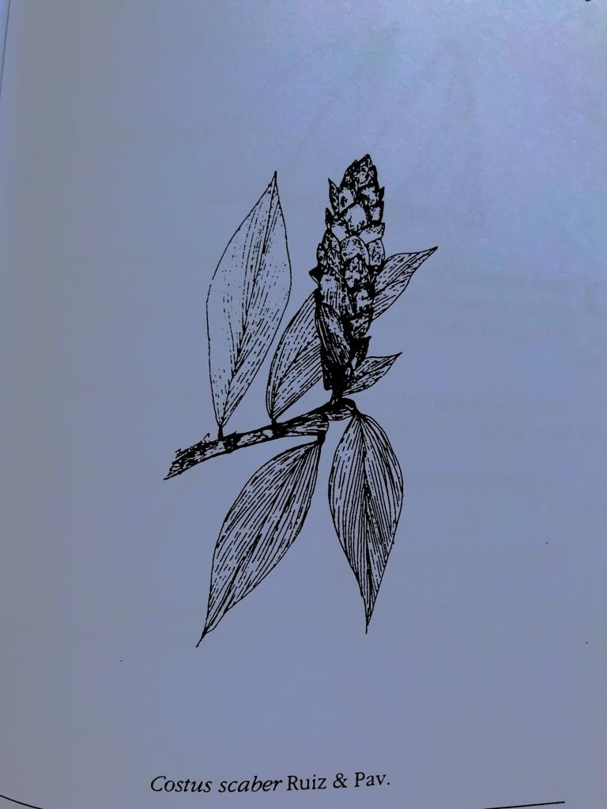

Flores y frutos de la Reserva Biológica Alberto Manuel Brenes
La infomación presente en esta seccion fue extraida de: Sánchez Porras, R. (2014). Flores y frutos de la Reserva Biológica Alberto Manuel Brenes. San Ramón, Alajuela. Se pretende con esto que los espectadores se interesen en conocer más sobre las flores y frutos de la Reserva Biológica Alberto Manuel Brenes, ya que las especies aquí presentes solo representan una minoría en base a la totalidad que cubre el libro.
© Ronald Sánchez Porras © Victor Mora Chavez
Acanthaceae
Aphelandra auarantiaca.
© Teresa Barrantes Lobo
Acanthaceae
Justicia crenata (Leonard) Durkee
Arbusto de 3 metros de alto, tallos cilíndricos, glabros, hojas simples opuestas, elípticas, de 24 cm de longitud y 9,5 cm de ancho, glabras.
Inflorescencias terminales en panículas de 6 cm, flores ligeramente pubescentes, corola roja con el ápice blanco.
Frutos cápsulas de 1,5 cm de largo, glabros con unos pocos pelos glandulares en la punta.
Florece en noviembre-diciembre-enero.
Distribución: esta especie es encontrada en los bosques lluviosos de Costa Rica, región de San Ramón.
© Teresa Barrantes Lobo
Acanthaceae
Odontonema tubiforme (Bertol.) Kuntze
Endémica. Arbusto arriba de 2 metros de altura, tallos cuadrangulares, glabros, las porciones jóvenes menudamente pubescentes. Hojas simples opuestas, de oblongo-elípticas a lanceoladas, de 30 cm de largo y 11 cm de ancho, glabras menudamente pubescentes en las venas de la parte superior; pecíolos cortos y alados.
Inflorescencias en racimos delgados, flores en fascículos, brácteas delgadas, flores 6 0 más con el cáliz rojo los pétalos iguales, corola de oscuro a rojo brillante de 2,5 cm de largo, pedicelos rojo delgados, arriba de 7 mm de largo.
Frutos en cápsula de 1,8 cm de largo y 3 mm de ancho, pardo rojizo cuando están secos.
Florece en noviembre.
Distribución: endémica, Turrialba y región de San Ramón.
© Teresa Barrantes Lobo
Amaranthaceae
Alternanthera costaricensis Kuntze
Hierba de 20 a 80 cm de altura, aparentemente perennes, erectas y no ramificadas. Hojas simples, opuestas, glabras de 7 cm de longitud y de 2 a 5 cm de ancho.
Inflorescencias sésiles o subsésiles, en las axilas de las hojas terminales o distales. Flores de 1 a 4 cm de longitud y 1 cm de an- cho, verduscas, café amarillentas cuando están secas, densamente pilosas.
Florece en junio-agosto.
Distribución: endémica, bosques húmedos de la costa atlántica y región de San Ramón.
© Teresa Barrantes Lobo
Apocynaceae
Stemmadenia alfari (Donn. Sm.) Woodson
Arbustos de 3 metros de altura. Endémica. Hojas simples, alternas, glabras, oblongo-elípticas. Flores con corola en forma de bandeja, amarillo brillante, de 3 a 3,5 cm de largo, sépalos de 1,5 a 2 mm de largo. Frutos en pares en forma de cuerno, de 2,5 cm de largo y 0,6 cm de ancho.
Florece de mayo-junio.
Distribución: frecuente en bosques húmedos, región de San Ramón y en las montañas de Guanacaste; de 600 a 1100 m.s.n.m.
© Teresa Barrantes Lobo
Araceae
Anthurium obtusilobum Schoott.
Hierba erecta de 50 a 60 cm de altura, hojas basales glabras, cordadas, lámina (seca) de 20 a 22 cm de largo y de 14 a 15 cm de ancho, pecíolos acanalados.
Inflorescencia sale de la base, espata blanca, espádice blanco con manchas rosadas de 4,7 cm de longitud y de 0,7 cm de ancho, espata de 20 cm de largo y de 5,3 cm de ancho, pedúnculo floral de 20 cm de largo.
Florece de julio-agosto.
Distribución: endémica. Cerca de San José y cantón de Osa. Región de San Ramón.
© Teresa Barrantes Lobo
Araceae
Anthurium testaceum. Croat & R.A. Baker
Hierba erecta de 65 cm de altura; hojas basales, glabras, lanceoladas, borde entero, trinervia, ápice acuminado, base cuneiforme de 18 a 28 cm de largo y de 3 a 5 cm de ancho, pecíolos de 8,5 a 13 cm de largo, espata verde, espádice rojo de 6,3 cm de largo.
Florece en setiembre.
Distribución: Región de San Ramón.
© Teresa Barrantes Lobo
Araliaceae
Dendropanax querceti Donn. Sm.
Arbusto de 2,50 metros de altura, hojas simples en verticilos, pequeñas de 5 a 10 cm de largo y de 3 a 5,5 cm de ancho, ápice acuminado, atenuado en la base, borde entero o ligeramente denticulado, venación pinnada estípulas formando una corona alrededor de los nudos.
Inflorescencia en umbelas solitarias y terminales, flores blanco verduscas. Frutos morados, llegando a ser negros, jugosos, de 5 a 5, de diámetro.
Florece en agosto-setiembre.
Distribución: endémica, frecuente en los bosques de Dota Y en la región sur de Cartago En la región de San Ramón principalmente de 850 a 1.800 m.s.n.m.
© Teresa Barrantes Lobo
Asclepiadaceae
Asclepias curassavica L.
Hierba erecta de 1 m de altura o menos, glabras, tallo simple, verde. Hojas simples, opuestas, pecioladas, glabras.
Inflorescencia en umbelas con pocas flores. Flores visosas, pétalos color púrpura, partes internas anaranjadas, en números de 5. Frutos son folículos, glabros o pubescentes, de 3 a 10 cm de largo, fusiformes, semillas cerca de 6 mm de longitud.
Florece todo el año.
Distribución: frecuente a lo largo de caminos o en pastizales, Meseta Central y ocasionalmente en la tierra caliente.
© Teresa Barrantes Lobo
Asteraceae
Critonia morifolia (Mill.) R.M. King & Rob.
Plantas herbáceas de 1,5 a 3 metros de altura, simples o espacialmente ramificadas, fuerte tallos cilíndricos, huecos glabros o algunas veces tomentosos; hojas simples opuestas, pubescentes, grandes de 12 a 20 cm de largo y de 10 a 20 cm de ancho.
Inflorescencias muy grandes, verduscas con blanco, con 8 a 12 flores de 5 mm, sésiles o cortamente pecioladas en panículas.
Florece en agosto.
Distribución: en bosques húmedos, en la región de San José a las costas; región de San Ramón, a l. 100 metros o menos.
 : Flora del Sotobosque de la Reserva Biológica Alberto Manuel Brenes / Teresa Barrantes Lobo.. San Ramón, Alajuela, Costa Rica : Coordinación de Investigación, Sede Regional de Occidente, Universidad de Costa Rica, 2004.[ISBN 9968995665].")
Bromeliaceae
Pitcairnia brittoniana Mez.
Planta terrestre de 1 29 metros de altura, hojas basales de 77 cm (secas) de largo o más, de 7,5 cm de ancho, glabras, borde entero, en el peciolo tiene espinas duras pardas.
Inflorescencia en espiga anaranjada, basal, pedúnculo floral de 72 cm de longitud y la inflorescencia mide 53 cm de longitud.
Florece en octubre, noviembre, diciembre, enero.
Distribución: en bosques húmedos, la Palma, a 1.600 metros, también en la región de San Ramón a 950 metros.
© Teresa Barrantes Lobo
Campanulaceae
Centropogon granulosus C. Presl
Hierbas erectas, de I a 1,5m de altura. Hojas simples, alternas, glabras, borde ligeramente aserrado, principalmente las hojas más pequeñas; ápice agudo, base cuneiforme, oblanceoladas, nervadura pinnada, lámina de 3,2 a 19 cm de largo.
Cerca de la inflorescencia tiene hojas más pequeñas, de 1,5 cm de largo y 0,5 cm de ancho. Inflorescencia en cimas terminales, 10 sépalos, verdes, de 1 a 1,4 cm de largo, pedúnculos florales de 2 a 3 cm. de longitud, corola roja, de 2,4 cm de largo, 5 pétalos, 10 estambres; ovario medio.
Florece en mayo-junio-agosto.
Distribución: endémica. Frecuente en las laderas de la región central, de 100 a 1.800 metros, región de San Ramón.
© Teresa Barrantes Lobo
Celastraceae
Euonymus costaricensis Standl.
Arbustos de 3 a 5 metros de altura. Hojas simples, opuestas borde aserrado, de 7 a 12 cm de largo y de 2 a 4,5 cm de ancho, glabras.
Flores verdes en cimas axilares, pedunculadas, de 2 a 5 flores. Frutos capsulares, de 1 cm de largo de color rojo en su estado juvenil.
Florece en junio-julio.
Distribución: en bosques lluviosos, en Fraijanes de los 1.500 a los 1.700 metros, cerca de Quebradillas (Santa María de Dota) 1.800 metros y en la región de San Ramón a 800 metros.
© Teresa Barrantes Lobo
Clusiaceae
Cbrysoclamys glauca (Oerst. Planch. & Triana) Hemsl.
Arbusto de 3 m. de altura. Hojas simples, opuestas. Glabras lámina entera; ápice acuminado, base cuneiforme; nervadura pinnada.
Frutos rojos terminales, de 0,7 a 1,3 cm de longitud, y de 0,5 a 1,1 cm de ancho.
Florece de junio-julio.
Distribución: región de San Ramón
© Teresa Barrantes Lobo
Commelinaceae
Tradescantia zanonia (L.) sw.
Plantas carnosas ramificadas de 2 metros o más de altura, hojas simples alternas, pubescentes en el envés, borde entero, pecíolos envainadores, pubescentes, lámina de 20 a 26 cm de largo y de 6 a 6,5 cm de ancho.
Flores axilares en el lado opuesto de la hoja, pedúnculos muy largos de 14 a 20 cm de largo, brácteas verdes glabras, flores blancas pequeñas.
Florece en setiembre.
Distribución: común en bosques húmedos de la Meseta Central a la costa; también en las laderas de los volcanes, ascendiendo hasta los 2.000 metros.
© Teresa Barrantes Lobo
Costaceae
Costus malortieanus H. Wendl.
Plantas pubescentes, menores de 1 metro de altura, hojas en espiral muy pubescentes en ambas superficies, láminas de 35 cm de largo y de 8,5 a 13,5 0 más cm de ancho, pecíolos envainadores, pubescentes en el haz de las hojas, las venas secundarias son de color negro y en el envés verde pálido.
Inflorescencia en espiga, con flores de 5 cm de largo, pétalos blancos con rayitas moradas.
Florece de setiembre-octubre.
Distribución: desde el nivel del mar a 1.000 metros.

© Teresa Barrantes Lobo
Costaceae
Costus scaber Ruiz & Pav.
Planta de 1,20 metros de altura, hojas en espiral, alrededor del tallo, piloso, pecíolos cortos, lámina pilosa de 9,5 a 16 cm de largo o más y de 3,5 a 5 cm de ancho, borde entero.
Inflorescencia en espiga de 14 cm de largo, terminales, brácteas rojas, corola amarilla o anaranjada, labelo amarillo, ovario trilocular.
Florece en setiembre.
Distribución: de México, Centroamérica, Antillas y el trópico suramericano, alrededor de 500 a 800 metros, principalmente.
© Teresa Barrantes Lobo
Cyclanthaceae
Cyclanthus bipartitus Poit.
Plantas terrestres de 1 a 2 metros de altura, formando densos grupos, pecíolos elongados, lámina bipartita de 50 a 100 cm de longitud, segmentos lineares — lanceolados de 7 a 15 cm de ancho.
Flores monoicas sobre espádices, los estambres y gineceos de las flores están en forma de espiral.
Los frutos parecen tornillos de 10 a 20 cm de longitud, espa- tas de 4 0 5.
Florece de julio-agosto.
Distribución: abundante en los bosques húmedos de toda la costa Atlántica, ascendiendo a 1.400 metros de altura; región de San Ramón.
© Teresa Barrantes Lobo
Fabaceae
Calliandra brenesii Standl.
Arbustos de 2 a 2,5 m de altura, ramas cilíndricas, intemudos largos, hojas brevemente pecioladas, con 2 foliolos semiovalados, de 9 a 15 cm de largo, 3 a 6,5 cm de ancho, base semirredondeada, ápice acuminado, glabras, trinervias, coriáceas.
Inflorescencias en capítulos con varias flores, de 13 a 15 cm o más, corola glabra de 11 mm de largo, estambres púrpuras (26) de 3,5 cm de largo; frutos de 10 cm de largo, 12 mm de ancho, acuminado en la base.
Florece en mayo, junio y noviembre.
Distribución: Bosques húmedos de Cataratas, la Balsa de San Ramón, de 700 a 800 metros; El Silencio de Tilarán y Aguacate
© Teresa Barrantes Lobo
Fabaceae
Erythrina gibbosa Cufod.
Arboles pequeños o arbustos, con espinas de 0,8 cm de longitud, moderadamente pilosas. Hojas con las hojuelas terminales ovada-lanceoladas u ovadas-romboides de 8 a 30 cm de longitud, y de 4 a 15 cm de ancho, pubescentes a glabras.
Flores con el cáliz campanulado de 15 mm de longitud y 4 mm de ancho.
Florece en enero, julio y noviembre.
istribución: endémica, región de San Ramón, hasta los 1.300 metros.